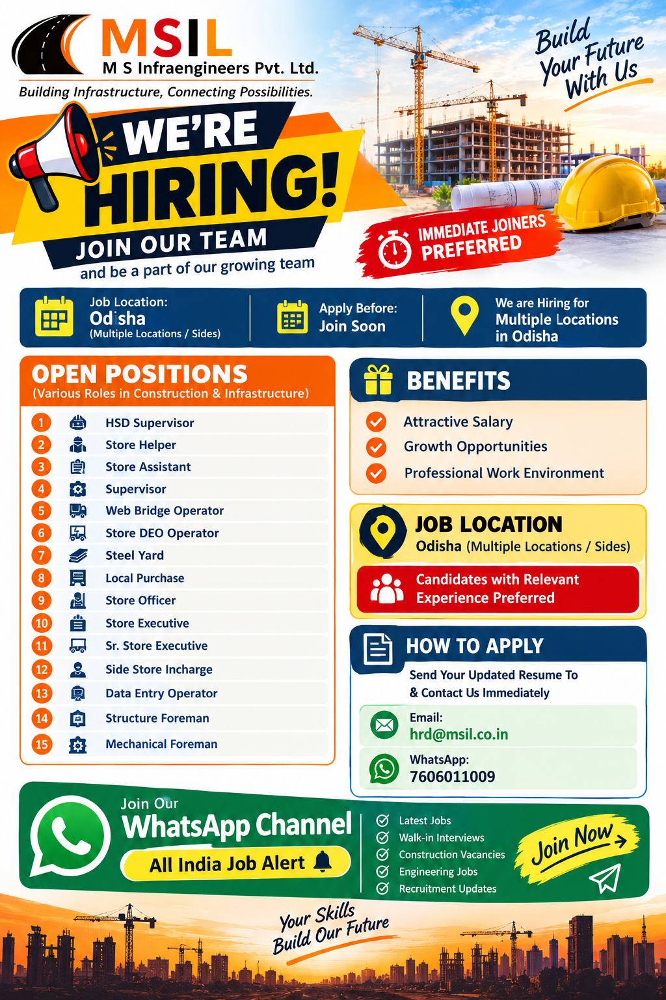

📢 All India Job Alert WhatsApp Channel
Odisha jobs, construction jobs, store jobs, supervisor vacancies, engineering jobs, private company jobs and latest recruitment updates ke liye hamara WhatsApp Channel join karein.
JOIN ALL INDIA JOB ALERTAll India Job Alert
MS Infrastructure Jobs in Odisha 2026
MS Infrastructure Pvt. Ltd. has announced multiple career opportunities for experienced and skilled candidates across Odisha. The recruitment drive includes openings in stores, site supervision, operations, data entry, purchase, steel yard activities and construction site support. Immediate joiners are preferred, making this recruitment particularly useful for candidates who are available to join at short notice.
The available positions cover different levels of responsibility. Candidates can apply according to their experience and professional background. The openings include HSD Supervisor, Store Helper, Store Assistant, Supervisor, Web Bridge Operator, Store DEO Operator, Steel Yard, Local Purchase, Store Officer, Store Executive, Senior Store Executive, Side Store Incharge, Data Entry Operator, Structure Foreman and Mechanical Foreman.
The job locations are mentioned as Odisha with multiple locations and project sites. Candidates who are comfortable working at different project locations in Odisha can consider these opportunities. Construction and infrastructure projects generally require professionals who can manage materials, stores, site operations, documentation and coordination activities efficiently.
Job Location
📍 Location: Odisha
📌 Work Area: Multiple Locations / Project Sites
🚨 Preference: Immediate Joiners Preferred
Candidates should be prepared to work at project sites and locations assigned by the company depending on the requirement.
Open Positions
1. HSD Supervisor
HSD Supervisors are responsible for supervising relevant site activities and ensuring smooth coordination of daily operations. Candidates with practical site experience and the ability to coordinate workers, equipment and routine activities can consider this position. Candidates should mention their previous site experience and responsibilities clearly in their resume.
2. Store Helper
Store Helpers support day-to-day store activities at construction and project locations. Typical responsibilities may include assisting with material handling, arranging materials, maintaining store areas and supporting store staff. Candidates who have worked in construction stores or project sites can highlight that experience in their CV.
3. Store Assistant
Store Assistants support store operations, documentation and material management activities. Candidates may be involved in receiving materials, checking quantities, arranging stock and supporting inventory records. Previous construction store experience can be beneficial for this role.
4. Supervisor
Supervisors are expected to coordinate daily site activities and ensure that assigned work is completed properly. Candidates should be capable of handling workers, coordinating with site teams and following project instructions. Previous construction or infrastructure site experience is preferred.
5. Web Bridge Operator
The Web Bridge Operator position is related to operational and project-site activities. Candidates with relevant operational experience should clearly mention their previous work profile, equipment or system knowledge and project exposure in the updated resume.
6. Store DEO Operator
Store DEO Operators can be involved in data entry, store records, material documentation and computer-based reporting. Candidates with knowledge of basic computer operations, data entry and documentation can highlight these skills while applying.
7. Steel Yard
Steel Yard positions are suitable for candidates familiar with construction steel materials and project-site storage activities. Candidates with experience in handling reinforcement steel, material identification, storage and yard coordination should mention their relevant experience.
8. Local Purchase
Local Purchase personnel support procurement of materials and coordination with local suppliers. Candidates with knowledge of local purchasing, vendor coordination, material requirements and construction supplies can consider this opportunity.
9. Store Officer
Store Officers handle important store and material management responsibilities. Candidates should have experience with stock records, material receiving, issuing materials, documentation and coordination with project teams. Construction store experience can be an advantage.
10. Store Executive
Store Executives are responsible for supporting efficient store operations and maintaining proper material records. Candidates should be comfortable with inventory management, documentation, material tracking and coordination with site teams and vendors. Relevant project-store experience should be clearly mentioned in the CV.
11. Sr. Store Executive
Senior Store Executives will be suitable for experienced candidates who can handle store operations with greater responsibility. Candidates should highlight their experience in inventory management, material control, documentation, stock reconciliation and coordination with project departments.
12. Side Store Incharge
Side Store Incharge positions are suitable for candidates who can manage materials and store activities at project-side locations. Responsibilities may include maintaining stock, coordinating material movement, keeping records and supporting site requirements. Previous project-site store experience is preferred.
13. Data Entry Operator
Data Entry Operators will support computer-based documentation and record management. Candidates should have basic computer knowledge, accurate typing skills and the ability to maintain project records. Experience with Excel, data entry or construction documentation can be useful for this role.
14. Structure Foreman
Structure Foremen are required for construction-site activities related to structural work. Candidates should have practical experience supervising workers and coordinating structural activities. Applicants should clearly mention their construction experience and previous responsibilities in their resume.
15. Mechanical Foreman
Mechanical Foremen can apply if they have relevant experience in mechanical site activities. Candidates should highlight their experience in supervising mechanical work, coordinating manpower, following drawings or instructions and maintaining site safety and work quality.
Salary Details
The recruitment poster mentions different salary ranges for several positions. Salary can vary according to designation, experience, skills and project requirements. Candidates should review the salary information below and discuss the final compensation with the recruitment team during the application or selection process.
| Position | Salary Mentioned |
|---|---|
| HSD Supervisor | ₹15,000 – ₹17,000 |
| Store Helper | Up to ₹13,000 – ₹15,000 |
| Store Assistant | Up to ₹13,000 – ₹15,000 |
| Supervisor | Up to ₹17,000 – ₹22,000 |
| Web Bridge Operator | Up to ₹15,000 – ₹17,000 |
| Store DEO Operator | Up to ₹14,000 – ₹15,000 |
| Steel Yard | Up to ₹20,000 – ₹25,000 |
| Local Purchase | Up to ₹15,000 – ₹17,000 |
| Store Officer | ₹19,000 – ₹24,000 |
| Store Executive | ₹25,000 – ₹28,000 |
| Sr. Store Executive | ₹25,000 – ₹30,000 |
| Side Store Incharge | Up to ₹30,000 |
| Data Entry Operator | Up to ₹15,000 |
| Structure Foreman | As per company/project requirement |
| Mechanical Foreman | As per company/project requirement |
Benefits
- Attractive Salary
- Growth Opportunities
- Professional Work Environment
- Opportunity to work on infrastructure and project sites
- Experience in construction and project operations
- Career development opportunities for suitable candidates
How to Apply
Interested candidates should send their updated resume and contact the recruitment team immediately. Candidates should mention the position they are applying for in their resume or message.
📧 Email:
hrd@msil.co.in
📱 WhatsApp:
+91 7606011009
📍 Job Location:
Odisha – Multiple Locations / Project Sites
Candidates should send a recent and updated CV containing their name, mobile number, total experience, previous company details, designation, project experience and relevant skills.
Application Process
Candidates should first prepare an updated resume and check which position best matches their experience. The resume should clearly mention the candidate's current location, preferred job role, previous project experience and joining availability. Since immediate joiners are preferred, candidates who are available to join quickly should mention their availability clearly.
After preparing the CV, candidates can send it to the provided HR email address or contact the recruitment team through WhatsApp. Candidates should avoid sending incomplete resumes. A clear and professional CV makes it easier for the recruitment team to review the candidate's profile.
Who Should Apply?
This recruitment is suitable for candidates with experience in construction, infrastructure, project stores, material management, site supervision, operations, data entry, purchase and foreman activities. Candidates should apply according to their actual experience and skills.
Store professionals should highlight inventory management, material receiving and issuing, stock documentation, vendor coordination and project store experience. Supervisors and foremen should mention manpower handling, site coordination and practical construction experience. Data Entry Operators should mention computer skills, Excel knowledge and documentation experience.
Important Tips Before Applying
- Keep your resume updated.
- Mention your total years of experience clearly.
- Mention your previous construction or infrastructure projects.
- Clearly mention your preferred position.
- Mention your current location.
- Mention your notice period or immediate joining availability.
- Keep educational and experience documents ready.
- Use a professional mobile number and email address.
Important Notice
Immediate Joiners are preferred. Candidates should check the position, salary and project location before applying.
Job information has been prepared from the recruitment details provided. Final selection, salary, job responsibilities and deployment location will be decided by the recruiting company.
Candidates should never pay money to any person for guaranteed job selection. Do not share OTPs, ATM PINs, passwords or other sensitive banking information with unknown persons.
Frequently Asked Questions
What is the job location?
The job location is Odisha, with multiple locations and project sites.
Which company is hiring?
The recruitment is for MS Infrastructure Pvt. Ltd.
Are immediate joiners preferred?
Yes. Immediate joiners are preferred according to the recruitment information.
How can I apply?
Candidates can send their updated resume to hrd@msil.co.in or contact the recruitment team on WhatsApp at +91 7606011009.
What type of jobs are available?
Openings include HSD Supervisor, Store Helper, Store Assistant, Supervisor, Web Bridge Operator, Store DEO Operator, Steel Yard, Local Purchase, Store Officer, Store Executive, Sr. Store Executive, Side Store Incharge, Data Entry Operator, Structure Foreman and Mechanical Foreman.
Is experience required?
Relevant experience is preferred for the available positions. Candidates should mention their previous experience clearly in their CV.
📲 Latest Job Updates – All India Job Alert
Private Jobs • Odisha Jobs • Construction Jobs • Store Jobs • Supervisor Jobs • Engineering Jobs • Walk-in Interviews • Latest Recruitment Updates
JOIN WHATSAPP CHANNELAll India Job Alert
Final Words
MS Infrastructure Pvt. Ltd. offers multiple employment opportunities for candidates looking to build their careers in construction, infrastructure and project-site operations in Odisha. The openings cover several job categories, allowing candidates from different professional backgrounds to apply for suitable positions.
Candidates with experience in stores, material management, site supervision, construction operations, data entry, local purchase, steel yard activities and mechanical or structural work can review the vacancies carefully. The company has listed several positions